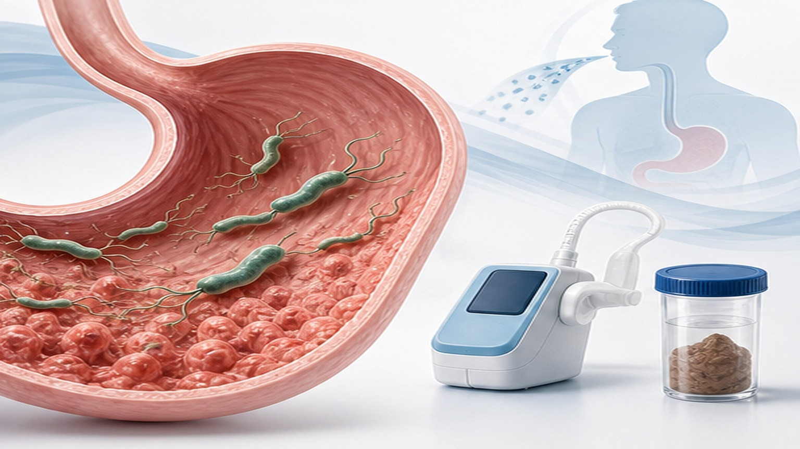
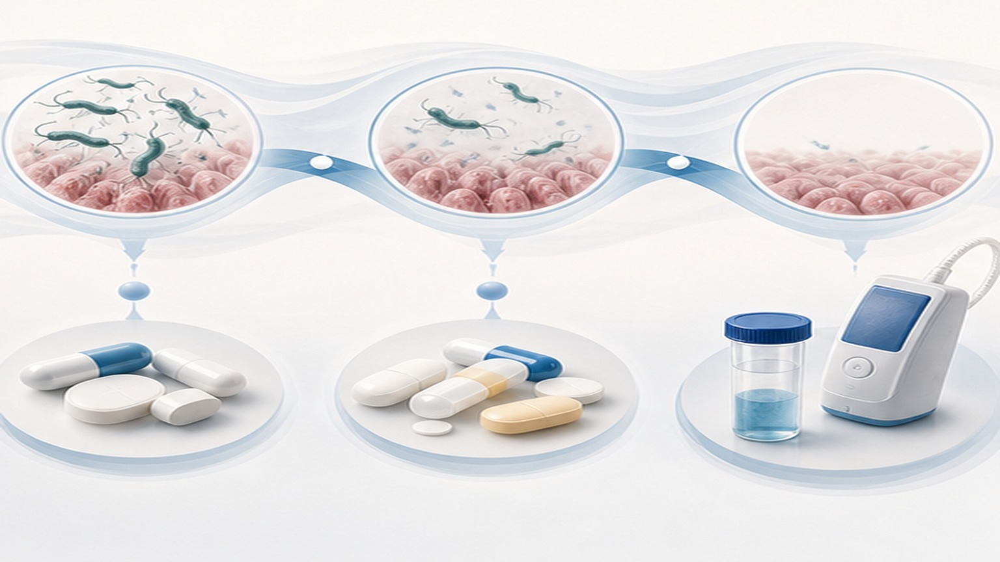

생활환경이 좋아지며 줄었지만, 여전히 위암의 주요 원인입니다
한 번 감염되면 저절로 없어지지 않고, 오랜 염증이 단계적으로 위 점막을 바꿉니다
내시경으로 조직을 떼어 보는 검사와, 내시경 없이 하는 검사로 나뉩니다
| 검사 | 방법과 특징 |
|---|---|
| 신속요소분해효소 검사(CLO) | 내시경 때 떼어 낸 조직으로 바로 검사 · 30분~24시간 안에 결과 |
| 조직검사 | 현미경으로 확인 · 위축·장상피화생도 함께 평가 |
| 세균 배양 | 항생제가 듣는지 확인 · 두 번 실패한 뒤 약을 고를 때 |
| 요소호기검사 | 약을 마신 뒤 내쉰 숨으로 검사 · 정확도 95% 이상, 재검사에 주로 사용 |
| 대변 항원검사 | 대변으로 검사 · 어린이·고령자도 부담이 적음 |
| 혈액 항체검사 | 과거 감염도 양성 · 치료 후 확인에는 쓰지 않음 |

위쪽 세 가지는 꼭 권하고, 아래쪽은 상황에 따라 권합니다
국내 지침은 내성검사에 맞춘 치료를 우선하며, 경험적 치료로 10일 동시요법 등을 권합니다
| 조합 | 들어가는 약 · 먹는 횟수 | 기간 |
|---|---|---|
| 표준 삼제요법 내성 확인 후 | 위산억제제(PPI) 표준용량 · 아목시실린 1000mg · 클라리스로마이신 500mg — 모두 하루 2번 | 14일 |
| 비스무트 사제요법 | 위산억제제 표준용량 하루 2번 · 비스무트 300mg·테트라사이클린 500mg 하루 4번 · 메트로니다졸 500mg 하루 3번 | 처방에 따라 10일 또는 14일 |
| 동시요법 비스무트 없음 | 위산억제제 표준용량 · 아목시실린 1000mg · 클라리스로마이신 500mg · 메트로니다졸 500mg — 모두 하루 2번 | 10일 |
1차 성공률은 약 70~85% — 단계를 거치면 대부분 제균됩니다

약을 끝낸 뒤 충분히 기다려야 재검사가 정확합니다
처방 그대로, 끝까지 드세요
미리 알아 두면 당황하지 않습니다 — 약을 끝내면 대개 사라집니다
단순하지만 제균 성공을 가르는 규칙입니다
QR로 다시 보기 · 복약 점검표는 한 장 안내문에서 확인하세요